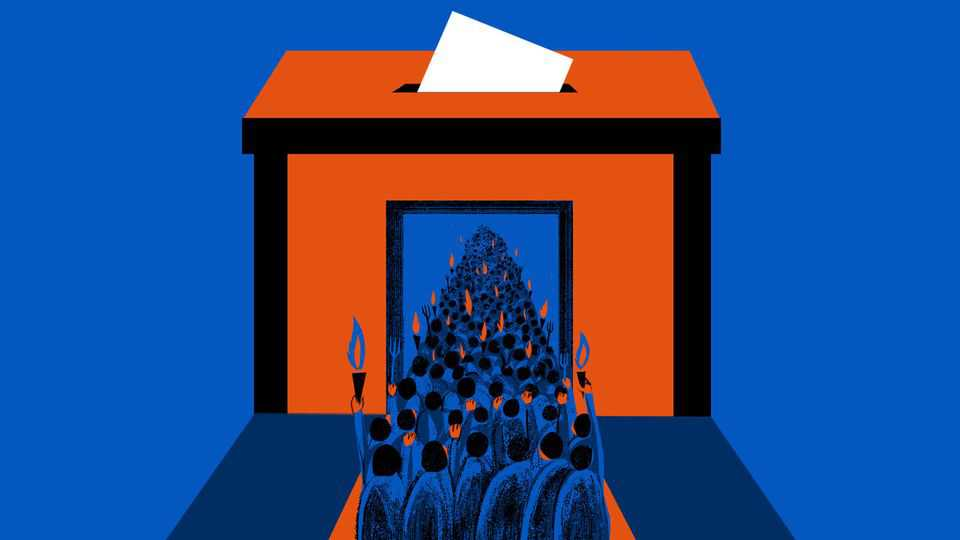

Democracy is stronger than it looks
Open societies have weathered murderous leftists and fascist radicals before

Oct 1st 2026
A YEAR OF rage is coming for democracies. Ugly elections loom in America, Brazil, France, Israel and beyond. Whoever wins those contests, one outcome is certain: angry voters will hear candidates peddling impossible promises and divisive lies.
In unlucky democracies, run-off contests may see citizens asked to choose between a sinister demagogue of the right and an irresponsible populist of the left. Doubt will be cast on the integrity of elections. That may involve sore losers questioning results, or newfangled attacks, as Russia and other rogues use AI-powered videos or bots to sow distrust, or hire saboteurs to spread fear.
Voters should be vigilant but hold their nerve, for countries that hold free and competitive elections are tougher than they look. In living memory democratic societies have survived not just rage but also the “Years of Lead”. This was the name that Italians gave to a blood-drenched era between about 1969 and 1988, when leftist revolutionaries and fascist radicals tried to overthrow their state with bombings, shootings and kidnappings.
Italy was not alone in its suffering. The modern history of political violence from America to Europe and beyond holds lessons for the present day. Democracy is not an effete or genteel pastime. It does not exist to select the most attractive politicians, then arrange them like flowers in a vase. Rage afflicts every human community. The genius of free societies is to channel fury into politics. When the system works, even angry conflicts and grievances can be managed with such tools as parliamentary horse-trading, open debate and the distribution of public cash. If that process can be tawdry, so be it. Today’s fretful voters should remember that, in lots of countries not very long ago, the alternative to multiparty politics involved extremists killing in the name of revolution.
Centrist leaders do have grounds for gloom. If polls are right, there is every chance that President Emmanuel Macron of France will be succeeded by Marine Le Pen, a populist nationalist liable to dismantle much of his legacy. There have been bank-robbers more popular than Germany’s chancellor, Friedrich Merz, whose approval ratings hit 13% in recent surveys. Still, their agonies hardly compare to the fate of Aldo Moro, the five-time prime minister of Italy. He was kidnapped, put on “people’s trial” and shot to death in 1978 by members of the Red Brigades, a radical-left terrorist group. The Brigades hated him for thwarting their dreams of revolution by bringing the (less fanatical, Soviet-backed) Communist Party of Italy into a coalition government.
Though foreign terrorists, notably from the Middle East, murdered many Italians in those dark times, domestic political violence killed even more, reports Andrea Ruggeri, a political scientist at the University of Milan. After scrutinising police and press reports, he and his colleagues tallied up 1,802 bombings, 716 arson attacks and 98 knee-cappings carried out by far-left and -right groups during Italy’s “Years of Lead”, killing 530 people in all.
In those years a dismaying number of Western students and intellectuals scorned democracy in favour of class struggle, taking as models Chairman Mao Zedong’s revolutionary regime in China, or Che Guevara, a guerrilla. Some cheered when politicians, industrialists or American diplomats were killed by Baader-Meinhof and the Red Army Faction in Germany or November 17 in Greece. There were separatist terrorist groups, from the IRA in Ireland (which nearly killed Britain’s then-prime minister, Margaret Thatcher) or the Basque nationalists of ETA in Spain.
In some cases mainstream elected politicians shielded extremists. Interviewed years later for an oral history project, a former American ambassador to Greece recalled a police commander confiding to him that powerful figures were protecting November 17, stopping a lift between floors at the police ministry to growl: “We’re not idiots. We can catch these bastards. But we’re handcuffed.” An alarming number of European trade unions were controlled by Stalinists, Trotskyites and other zealots. That helps explain why workers’ strikes peaked in much of western Europe in the 1960s, despite decades of rising prosperity.
This is not a call for complacency now. Political violence, including the murder of elected officials, remains a menace in democratic countries. So does Islamist terrorism, a scourge which straddles the worlds of ideology and religious hatred. But domestic political bombings and kidnappings are far rarer today. Gone are the days when members of mainstream groups in society sympathised with revolutionaries bent on destroying the state.
An objector might recall American counter-examples, from efforts to overthrow a presidential election on January 6th 2021, to the murder of Charlie Kirk, a conservative activist, and the attempted assassinations of President Donald Trump. Political scientists offer a sobering reply: America is a case apart. No other rich democracy shows the same tolerance towards armed protesters and militias, forgoing the legal monopoly over violence that other states enjoy. After escaping death in 2024, Mr Trump mused on that history, concluding that: “Only consequential presidents get shot at.”
Though each democracy is different, countries that conquered political violence often share common traits. In many cases extremists overreached, forfeiting public support by their cruelty. As importantly, radicals and separatists were brought into regular politics, forming legal parties to contest elections. To scholars of political violence such as Professor Ruggeri, the moral is clear. When political conflicts cannot play out in election campaigns and parliaments, then rage takes to the streets. That is why banning parties and censoring hateful opinions is self-defeating. Democracy faces grave dangers. Open societies should have more confidence that ballot boxes can beat bullets, and fight back. ■